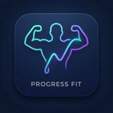

ProgressFit
ホーム画面への追加は、このページでSafariの共有メニューから「ホーム画面に追加」を選んでください。
ProgressFitを開く ボタンを押すとGoogle Apps Scriptの記録画面を開きます。記録画面ではパスワードを入力してください。ホーム画面に登録済みのGoogleアイコンは削除し、このページを追加し直してください。
ホーム画面への追加は、このページでSafariの共有メニューから「ホーム画面に追加」を選んでください。
ProgressFitを開く ボタンを押すとGoogle Apps Scriptの記録画面を開きます。記録画面ではパスワードを入力してください。ホーム画面に登録済みのGoogleアイコンは削除し、このページを追加し直してください。